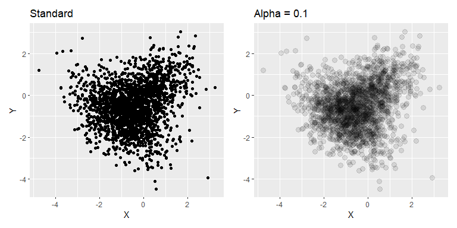
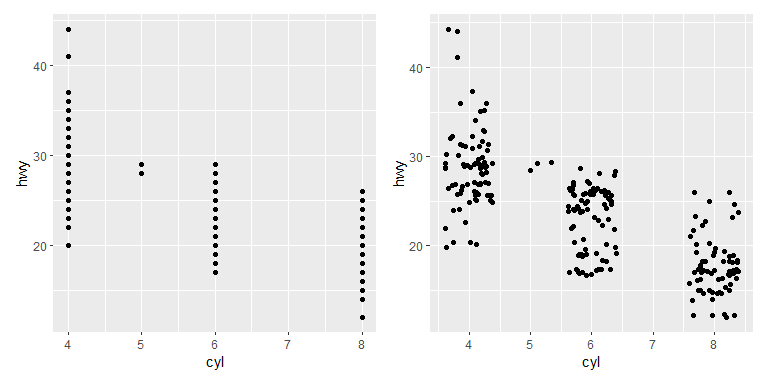
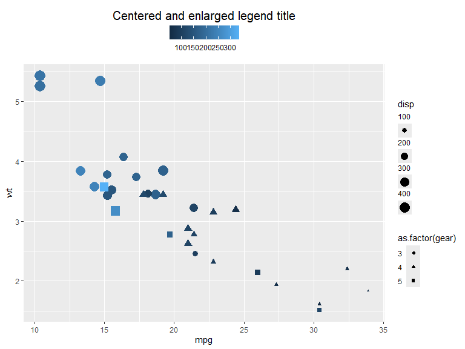

library(ggplot2)
# Data structure and manipulation libraries
library(dplyr)
library(tidyr)
# Library for combining ggplots
library(patchwork)ggplot2 quick reference
ggplot2 is a declarative system for making graphics in R based on The Grammar of Graphics. This document contains plots made in ggplot2 and some information about theming in ggplot2 to use as reference. It is meant to help learn/renew skills and as a reference for some less standard plots (e.g. time series plots with feats/fable).
Posit upholds a cheat sheet for ggplot2, which shows most of its methods in a compact manner.
Plot examples
Scatter plots
You can separate data on color, shape and size. alpha can be used to make plots more readable when many data points are present. position="jitter" is useful in cases of discrete positions in data.
ggplot(iris, aes(x=Sepal.Length, y=Sepal.Width, color=Species)) +
geom_point(size = 4) +
xlab("Sepal length") +
ylab("Sepal width")Using alpha basically turns the plot into a 2d kernel density estimate (with a circular uniform kernel), which can be useful where points are densely packed.
n <- 1000
R <- matrix(c(1, .5, 0, 0,
.5, 1, 0, 0,
0, 0, 1, -.5,
0, 0, -.5, 1),
nrow = 4, ncol = 4, byrow = TRUE)
mu = c(X1=0, X2=0, Y1=-1, Y2=-1)
data = mvtnorm::rmvnorm(n, mean=mu, sigma=R )
df <- tibble(Class="C1", x = data[,"X1"], y=data[, "X2"]) |>
bind_rows(
tibble(Class="C2", x = data[,"Y1"], y=data[, "Y2"])
)
p1 <- ggplot(df, aes(x=x, y=y)) +
geom_point() +
ggtitle("Standard")
p2 <- ggplot(df, aes(x=x, y=y)) +
geom_point(alpha=0.1, size=3)+
ggtitle("Alpha = 0.1")
p1 + p2
Example taken from ggplot2 reference. Shows the same data with and without jitter. Another option for categorical scatter plots is the beeswarm plot, which separates the points in a systematic way rather than random.
p1 <- ggplot(mpg, aes(cyl, hwy)) +
geom_point()
p2 <- ggplot(mpg, aes(cyl, hwy)) +
geom_point(position = "jitter")
p1 + p2
A pair-wise plot can quite easily be made with the library GGally. The diagonal and the upper and lower triangle each have a default plot type for continuous, discrete and combo (discrete on one axis and continuous on the other). These can be changed in the method, see ggpairs() documentation for more information.
library(GGally)
ggpairs(iris, columns = 1:4, aes(color=Species, fill=Species),
diag = list(continuous = wrap("densityDiag", alpha=0.6)))Bar plots
Bar plots can be used either through geom_bar(), which counts the number of instances of each group of x or y, or through geom_col() which takes the height/length of the bars.
iris |>
filter(Sepal.Length > 5) |>
ggplot(aes(x=Species, fill=Species)) +
geom_bar() +
ggtitle("Flowers with sepal length > 5cm")iris |>
group_by(Species) |>
summarise_all(mean) |>
pivot_longer(-Species, values_to = "Mean") |>
ggplot(aes(x=name, y=Mean, fill=Species)) +
geom_col(position = "dodge2") +
xlab("")Histograms
Default position is "stack". Use position "identity" for overlapping histograms. Bins/binwidth is determined automatically for this example. Change bins with bins = n or binwidth = c.
ggplot(iris, aes(x=Sepal.Length, fill=Species)) +
geom_histogram()ggplot(iris, aes(x=Sepal.Length, fill=Species)) +
geom_histogram(position="identity", alpha=0.5)Box plots
Boxplots are straight forward to generate. Below you can see two examples. Interquartile range can be changed through coef which defaults to 1.5.
ggplot(iris, aes(x=Sepal.Length, y=Species, fill=Species)) +
geom_boxplot()Grouped example of box plots. Position defaults to "dodge2".
iris |>
pivot_longer(cols = -Species) |>
ggplot(aes(y=value, x=name, fill=Species)) +
geom_boxplot() +
labs(y = "cm", x="")Distribution plots
The geom_density() function takes data and runs a kernel density estimation. kernel can be set to one of "gaussian", "rectangular", "triangular", "epanechnikov", "biweight", "cosine" or "optocosine" with kernel = "gaussian" as default. Defaults to position=identity, other options for this is stack which stacks the densities on top of each other and potentially fill (one should however be careful and fully aware of what is displayed when using the latter option).
ggplot(iris, aes(x=Sepal.Length, color=Species, fill = Species)) +
geom_density(alpha=0.6) +
xlim(bounds=c(4, 8.5))ggplot(iris, aes(x=Sepal.Length, color=Species, fill = Species)) +
geom_density(position="stack", alpha=0.8) +
xlim(bounds=c(4, 8.5))
For separated distribution plots we can use facet_grid(), which creates a grid according to given rules of data. Given data frame column names C1 and C2 the data can be faceted according to: C1 ~ . for rows, . ~ C1 for columns and C1 ~ C2 for a grid. rows=vars(C1) and cols=vars(C2) can be used instead.
ggplot(iris, aes(x=Sepal.Length, fill=Species, color=Species)) +
geom_density(show.legend = F, alpha=0.8) +
facet_grid(Species ~ .) +
xlim(c(4,8.5))Borrowed example from The R Graph Gallery with axis flipped. In my opinion, this is a better option than the very similar violin plot when many distributions are to be shown in comparison to each other. Note that this uses the library ggridges to create a “ridgeline plot” (faceted distribution plot with height able to overlap the above distribution). More information on these might be added later.
library(ggridges)
ggplot(lincoln_weather, aes(x = `Mean Temperature [F]`, y = Month, fill = stat(x))) +
geom_density_ridges_gradient(scale = 0.95, rel_min_height = 0.01) +
scale_fill_viridis_c(name = "Temp. [F]", option = "C") +
coord_flip()Time series
Using the tsibble and feasts libraries, many plots related to time series analysis can easily be created. Below is an example of a plot of a time series.
# Time series libraries
library(tsibble)
library(feasts)air_pas <- as_tsibble(AirPassengers)
air_pas |>
autoplot() +
ylab("Air passengers (in thousands)") +
xlab("") +
ggtitle("Monthly international air passengers 1949-1960")Two useful plots for inspecting seasonal changes can be seen below.
p_seas <- gg_season(air_pas, labels = "right", labels_repel = TRUE)
p_sub <- gg_subseries(air_pas)
p_seas / p_sub #plots combined through patchwork (library) A plot of a time series decomposition can also be displayed as follows. Here STL is used. The trend and seasonal windows are determined automatically for this example.
air_pas.stl <- air_pas |>
mutate(value = log(value)) |> # Log series since seasonality seems multiplicative with trend
model(
STL(value ~ trend() + season())) # The windows for trend and seasonality are automatically determined for this example
air_pas.stl |>
components() |>
autoplot() + labs(title = "STL decomposition of log(AirPassengers)")A plot for autocorrelation and partial autocorrelation can easily be made from a series. Note that the remainder seems to show some heteroscedasticity and as a result probably isn’t stationary.
air_pas.stl |>
components() |>
gg_tsdisplay(y = remainder, plot_type = 'partial')Forecasts with accompanying confidence intervals can be displayed and estimated with the library fable. Set level to change the confidence intervals, with NULL for no intervals or a list of numbers representing the percentages. Defaults to levels=c(80,95).
library(fable)
ts <- tsibbledata::aus_production |>
select(Electricity)
fit <- ts |>
model( ARIMA(Electricity), ETS(Electricity))
fit |>
forecast(h="5 years") |>
autoplot(ts |> filter(Quarter > yearquarter("1995 Q1")), level=c(80, 95, 99)) +
facet_grid(.model ~ .)Maps
ggplot2 makes it easy to plot maps with simple features data through geom_sf(). SF maps can be directly accessed through e.g.:
- rnaturalearth: R interface for the Natural earth dataset
- GiscoR: R interface/API for Eurostat GISCO
Otherwise, the R package sf contains tools for working with of SF data and also converting some data types to SF (see https://r-spatial.github.io/sf/articles/sf2.html).
In these examples we will use rnaturalearth to obtain map data and join it with other data.
Continents or countries can be obtained separately with rnaturalearth and, depending on the continent, used as is. Here the map data from Africa is obtained and joined with data from the gapminder data set.
Both data sets support the ISO 3166-1 alpha-3 naming standard and can as a result easily be combined.
library(rnaturalearth)
library(gapminder) # Data used in the example
afr_map <- ne_countries(continent = "Africa") |>
select(iso_a3)
gapm <- gapminder |>
filter(year==2007 & continent == "Africa") |>
left_join(country_codes) |>
select(iso_alpha, lifeExp)
afr_map |>
left_join(gapm, by=join_by(iso_a3 == iso_alpha)) |>
ggplot(aes(fill=lifeExp)) +
geom_sf() +
labs(title = "Life expectancy 2007", fill = "Years")Given that some countries in Europe have overseas territory, e.g. Guadeloupe and the Falkland islands, a map of the continent might need coordinate adjustments. Here we adjust the longitude and latitude displayed through coord_sf() and do not filter out non-European landmasses.
world_map <- ne_countries(scale = "medium") |>
select(name)
eu_gdppc <- read.csv("./data/eu_gdppc_proc.csv") # Data from Eurostat
world_map |>
left_join(eu_gdppc, by=join_by(name == geo)) |>
filter(name != "Denmark") |>
ggplot(aes(fill = X2024)) +
geom_sf() +
coord_sf(xlim=c(-25, 37), ylim=c(30, 70)) +
labs(fill = "", title = "GDP per capita 2024") +
scale_fill_distiller(palette = "OrRd", direction=1)For point or bubble maps either geom_point() or geom_sf() can be used depending on the data used. Here the sf package is used to calculate centroids of the countries and geom_sf() to plot them. Points are also manually inserted and added to the plot to show geom_point() functionality. Note that these points represent latitude and longitude in the default projection.
# Spherical geometry needs to be turned off for calculating centroids for this data set
sf::sf_use_s2(FALSE)
afr_map <- ne_countries(continent = "Africa") |>
select(iso_a3) |>
mutate(centroid = sf::st_centroid(geometry))
sf::sf_use_s2(TRUE)
gapm <- gapminder |>
filter(year==2007 & continent == "Africa") |>
left_join(country_codes) |>
select(iso_alpha, lifeExp)
mypoints <- data.frame(x=c(50, 45, 44, 45, 46, 47, 48, 49, 50, 51),
y=c(30, 30, 25, 24, 23.2, 23, 23, 23.2, 24, 25))
afr_map |>
left_join(gapm, by=join_by(iso_a3 == iso_alpha)) |>
ggplot() +
geom_sf() +
# Centroids are added to the plot
geom_sf(aes(geometry = centroid, color=lifeExp), alpha=0.8, size = 5) +
# Manual points are added to the plot
geom_point(data = mypoints, aes(x, y)) +
labs(title = "Life expectancy 2007", color="Years", x="", y="")
I do not currently possess the knowledge of the framework to go into depth, however, coordinate reference systems (CRS) of the map can be changed. Here is a very simple example using the EPSG:3035 CRS.
eur_map <- ne_countries() |>
select(name)
ggplot(eur_map) +
geom_sf() +
coord_sf(crs = sf::st_crs("epsg:3035"))Interactive charts
Plotly
Plots from ggplot2 can be turned into interactive plots through the library plotly, usually with the ease of “plug and play”. The resulting charts are equipped with a hover-over tooltip, panning, zooming and selections which can, for example, be used with shiny.
Here are a few examples of some interactive charts using the method.
Variables not present in the chart can be added to the hover-over tooltip by adding them to the ggplot2 aesthetics with a chosen name. For example, label1, label2, etc.
library(plotly)
p <- ggplot(iris, aes(color=Species, x=Sepal.Length, y=Sepal.Width, label1=Petal.Width, label2=Petal.Length)) +
geom_point() +
xlab("Sepal length") +
ylab("Sepal width")
ggplotly(p)p <- iris |>
pivot_longer(cols = -Species) |>
ggplot(aes(y=value, x=name, fill=Species)) +
geom_boxplot(position = position_dodge2(preserve = "single")) +
labs(y = "cm", x="")
ggplotly(p) |>
layout(boxmode = "group")p <- ggplot(iris, aes(x=Sepal.Length, fill=Species)) +
geom_histogram()
ggplotly(p)Theme settings
ggplot2 comes with a couple of themes to choose from, which are displayed below (theme_gray(),theme_minimal(),theme_bw(),theme_classic(),theme_dark(),theme_light()). Custom themes can also be set up, see e.g. Learning to create custom themes in ggplot for a tutorial. Custom themes might be added to this document at a later date.
p1 <- ggplot(iris, aes(x=Sepal.Length, y=Sepal.Width, color=Species)) +
geom_point(show.legend = F) +
xlab("Sepal length") +
ylab("Sepal width")
(p1 + theme_gray() + ggtitle("Gray")) +
(p1 + theme_minimal()+ ggtitle("Minimal")) +
(p1 + theme_bw()+ ggtitle("Black and white")) +
(p1 + theme_classic()+ ggtitle("Classic")) +
(p1 + theme_dark()+ ggtitle("Dark")) +
(p1 + theme_light()+ ggtitle("Light"))Color palettes
Color palettes can be defined through lists of either default colors supported in ggplot2 or through the colors RGB representation. They can also be named in cases where matches between specific groups and colors are desired.
my_palette1 <- c('purple', 'orange', 'aquamarine3')
my_palette2 <- c('virginica' = '#FF0000', 'setosa' = '#00FF00', 'versicolor' = '#0000FF') # Fully Red, Green, Blue in RGB notation
p1 <- ggplot(iris, aes(x=Sepal.Length, y=Sepal.Width, color=Species)) +
geom_point() +
xlab("Sepal length") +
ylab("Sepal width")
(p1 + scale_color_manual(values = my_palette1)) +
(p1 + scale_color_manual(values = my_palette2))Here are some examples of color palettes from the ColorBrewer set. These can easily be used with ggplot through the function scale_colour_brewer(palette = "palette name"). Further palettes can be acquired from the R package Paletteer which contains more than 2000 color palettes, including continuous palettes, and functions for simple use with ggplot.
The qualitative colors of the Colorbrewer set are shown below. These are useful for distinguishing between different groups of data. For example, the different flower species in the iris data set.
library(RColorBrewer)
display.brewer.all(type='qual')Below are the sequential colors of the Colorbrewer set, useful for ordered data visualizations such as heat maps.
display.brewer.all(type='seq')The diverging colors diverge in two directions from a central color, emphasizing a mid-range value and/or the extremes. Useful for comparisons in relation to a chosen value/group or for loose groupings of ordered data.
display.brewer.all(type='div')Legends
Legends in ggplot are very customizable in position and theme. Below are some examples and options reference for customization of legends. I would recommend to set many of these options on a theme basis rather than individual basis, however, here some are set on an individual basis to show more examples within a small space.
- guide_legend() and guide_colorbar() are used in conjunction with
guides()to specify aspects of legend guides (Legend reference, Colorbar reference). Here are some of the arguments:- position: Position of the legend relative to the chart. One of
"top","right","bottom","left"or"inside" - order (integer): Order in which the guides are shown.
- ncol/nrow: Sets number of columns or rows of legend items (only guide_legend)
- direction: Direction of the legend (
horizontalorvertical)
- position: Position of the legend relative to the chart. One of
- legend.position: Default position of the legends
p <- mtcars |>
ggplot(aes(x=mpg, y=wt, color=hp, shape=as.factor(gear), size=disp, fill = as.factor(cyl))) +
geom_point() +
guides(
color = guide_colorbar(position = "top", order = 1),
shape = guide_legend(position = "inside", direction = "horizontal"),
size = guide_legend(position = "top", ncol = 2, order = 2),
fill = guide_legend(position = "inside")
) +
scale_size_binned(range = c(1, 8), n.breaks = 8) +
theme(legend.position.inside = c(0.8, 0.8))
p- legend.position.inside: Legend placement when legend position is set to inside. (
c(a, b), where \(a,b \in [0,1]\)). - legend.justification: Justification of legends relative to plot. One of “left”, “right”, “top”, “bottom”, “center” or 2-dimensional vector (text or numeric). E.g.
c(0, 1),c("left", "top").- can be set individually for each legend position with: legend.justification.top, legend.justification.bottom, legend.justification.left, legend.justification.right, legend.justification.inside.
- legend.box.just: Justification of legends within the bounding box.
- legend.box: Arrangement of legends within the bounding box.
"horizontal"or"vertical"
Legend bounding box is set with a background and margin here to show its relation to the legends.
p +
theme(legend.position.inside = NULL,
legend.justification = "left",
legend.justification.inside = c("right","top"),
legend.box.background = element_rect(fill="gray"),
legend.box.margin = unit(2, "mm"),
legend.box.just = c("center", "bottom"),
legend.box = "horizontal")- legend.title.position: Legend title position relative to legend. Can be set to one of
"top","bottom","left","right" - legend.title: Options for legend title. Can be set with
element_text()(see element_text). - legend.text: Options for the key-text. Can be set with
element_text(). - legend.text.position: The position of the text relative to the keys. One of
"top","bottom","left","right"
mtcars |>
ggplot(aes(x=mpg, y=wt, color=hp, shape=as.factor(gear), size=disp)) +
geom_point() +
guides(
color = guide_colorbar(position = "top",
theme = theme(legend.title.position = "top",
legend.title = element_text(hjust = .5, size=15))),
shape = guide_legend(theme = theme(legend.text.position = "left")),
size = guide_legend(theme = theme(legend.text.position = "top"))
) +
labs(color= "Centered and enlarged legend title")
Background colors and borders for the components of legends can be set with element_rect() (see element_rect). The theme options also contain many options for spacing and margins, where spacings can be set with unit() and margins with margin()
For a full list of modifiable elements see theme reference.
mtcars |>
ggplot(aes(x=mpg, y=wt, color=hp, shape=as.factor(gear), size=disp)) +
geom_point() +
guides(
size = guide_legend(theme = theme(legend.background = element_rect(fill="orange", color="aquamarine"))),
shape = guide_legend(theme = theme(legend.key = element_rect(fill = "purple"),
legend.key.spacing.y = unit(1, "mm"))),
color = guide_colorbar(position = "top",
theme = theme(legend.frame = element_rect(color = "red")))
)Elements
The elements element_line(), element_rect(), element_text() and element_blank() are used in many of the attributes of the theme to set visuals of non-data components. Below are the attributes of each element type and some simple examples. For further information see Reference.
element_line() is used to specify lines and has the following arguments:
- color/colour: Color of the line
- linewidth: Line width in mm
- linetype: Type pf line (e.g. solid, dashed, etc.). Integer in \([0,8]\), a string (
"blank","solid","dashed","dotted","dotdash","longdash","twodash") or a custom sequence of hexadecimal numbers defined through a string, e.g."3121"(see reference for more information) - lineend: Line end type. One of
"butt","round"or"square" - arrow: An arrow from
grid::arrow()(see documentation for more information)
In this example geom_segment() is used to show the different options, however, in theme settings the lines are set with attribute = element_line(options)
df <- tibble(x=0, xend=10, y=5:1)
options <- list(linewidth = 2, color = "blue", linetype = 2, lineend = "round", arrow=arrow())
descr <- c("Line width = 2", 'color = "blue"', "linetype = 2 (dashed)", "lineend = round", "arrow = arrow()")
p <- ggplot(mapping = aes(linewidth=4, x=x, xend=xend, y=y, yend=y))
for (i in 1:5){
p <- p + do.call({function(...) geom_segment(data = df[i,], ...)}, options[i])
p <- p + annotate("text", x=5, y=6.2-i, label=descr[i])
}
p + ylim(0, 6) + xlim(-1, 11) + guides(linewidth="none") + theme_element_example()The rectangle element element_rect() is a rather simple element with the following arguments:
- fill: Color to fill rectangle with.
- color/colour: Color of the border.
- linewidth: Width of the border line in mm.
- linetype: line type of the border.
(ggplot() +
theme(panel.background =
element_rect(fill = "orange",
color= "cyan",
linewidth=3,
linetype="dashed")) +
ggtitle("Square with dashed line")) +
(ggplot() +
theme(panel.background =
element_rect(fill = alpha("red", 0.4),
linewidth=NULL)) +
ggtitle("No line and alpha = 0.4"))element_text() is used to specify the theme of the text and has the following arguments:
- family: Font family, e.g (
"Times new roman","Calibri") - face:
"plain","bold","italic", or"bold.italic". - color/colour: Color of the text.
- size: Size of text in pts.
- hjust: Horizontal justification of text. One of
"left","center","right"or \(\in [0, 1]\) (left = 0, center = 0.5, right = 1, etc.). - vjust: Vertical justification of text. One of
"top","center","bottom"or \(\in [0, 1]\) (bottom = 0, center = 0.5, top = 1, etc.) - angle: Angle of text in degrees.
- lineheight: Height between rows in multi-line text.
- margin: Margin around text. Defined with
margin(t, r, b, l, unit="pt")(letters stand for top, right, bottom and left margins).
Examples are shown with annotate() where the attributes can be set directly, however, in theme settings they are set with attribute = element_text(options).
library(extrafont)
# Warning! Ugly code.
p1 <- ggplot() + theme_element_example() +
ggtitle("hjust/vjust") +
xlim(0,5) + ylim(0,5) +
geom_vline(xintercept = 2.5, alpha=0.3) +
geom_hline(yintercept = 1, alpha=0.3) +
annotate("text", x = 2.5, y=4.5, label='hjust = "right"', size = 6, hjust="right") +
annotate("text", x = 2.5, y=3.5, label='hjust = "center"', size = 6, hjust="center") +
annotate("text", x = 2.5, y=2.5, label='hjust = "left"', size = 6, hjust="left") +
annotate("text", x = 0.7, y=1, label='vjust = "bottom"', size = 4.5, vjust="bottom") +
annotate("text", x = 2.5, y=1, label='vjust = "center"', size = 4.5, vjust="center") +
annotate("text", x = 4.3, y=1, label='vjust = "top"', size = 4.5, vjust="top")
p2 <- ggplot() + theme_element_example() +
ggtitle("Other") +
xlim(0,5) + ylim(0,5) +
annotate("text", x=1, y=4, size=6, label="Line height is\n equal to 1", lineheight=1) +
annotate("text", x=1, y=1.5, size=6, label="Line height is\n equal to 2", lineheight=2) +
annotate("text", x=3.8, y=4.5, size=6, label="Times New Roman", family="Times New Roman") +
annotate("text", x=4, y=3.5, size=6, label="Blue text", color = "blue") +
annotate("text", x=4, y=2.5, size=6, label="Bold text", fontface = "bold") +
annotate("text", x=4, y=1, size=6, label="Rotated text", angle=30)
# Combine plots
p1 + p2element_blank() is used to exclude attributes of being displayed. In the below example the axis text and grid lines are removed, however, most attributes can be removed.
ggplot(iris, aes(Petal.Length, Petal.Width, color=Species)) +
geom_point() +
theme(axis.text = element_blank(), panel.grid = element_blank())Units and margins
Many theme components can be set with the unit() and margin() functions.
unit(l, unit) is set with a length and a unit and represents the length in that unit. Supported units are e.g. "mm", "cm", "points", "inches" etc. See reference for more information.
margin(t, r, b, l, unit) is used to set margin theme options. It is set with a distance for each direction and a unit (which defaults to "pt"). The letters represent the following – t: top, r: right, b: bottom, l: left. Margin options can also be set by unit() if the same margins in all directions is desired.
Below are some examples of how units and margins can be used with legend components.
mtcars |>
ggplot(aes(x=mpg, y=wt, color=hp, shape=as.factor(gear), size=disp)) +
geom_point() +
guides(
size = guide_legend(theme = theme()),
shape = guide_legend(theme = theme(legend.key.height = unit(0.4, "inch"), # height of legend key
legend.key.width = unit(0.4, "inch"), # width of legend key
legend.key.spacing.y = unit(1, "mm"))),
color = guide_colorbar(position = "top",
theme = theme(legend.key.width = unit(10, "cm"))) # length of color
) +
theme(legend.box.background = element_rect(fill="gray"),
legend.box.margin = margin(1, 2, 4, 8, "mm")) # legend bounding box margin